Masking Ablation & STOP Gate 정량 검증 리포트
바스켓 영역의 다중 스케일 차폐(Masking) 실험을 통한 의사결정 인과성 규명 및 도착 STOP Y-Center 게이트 통합 성능 검증
1. 다중 스케일 Masking Ablation 결과
마스크 스케일을 1.5x ➔ 1.2x ➔ 1.0x (바스켓 정크기) ➔ 0.8x ➔ 0.5x (중심 국소 영역)로 스윕하며 차폐 강도에 따른 인과율과 의사결정 강건성을 검증했습니다.
또한 마스크 색상을 회색(128, 128, 128)에서 검은색(0, 0, 0)으로 전환하여, VLM의 시각 도메인 내 인위적 엣지 노이즈에 대한 감도 및 편향 여부를 추가 대조 분석했습니다.
| 마스크 스케일 | 전체 평균 Conf Drop | 방향 반전 비율 (Flip Rate) | 의사결정 판정 |
|---|---|---|---|
| 1.5x (기존 크기) | +0.0157 | 5.6% (2/36) | 부분 의존 (주변 맥락 침범) |
| 1.2x | +0.0195 | 2.8% (1/36) | 부분 의존 |
| 1.0x (정크기) | +0.0208 | 0.0% (0/36) | 독립 보조 신호 (안정) |
| 0.8x (타이트) | +0.0334 | 0.0% (0/36) | 부분 의존 (안정) |
| 0.5x (국소 중심) | +0.0319 | 0.0% (0/36) | 부분 의존 (안정) |
- 의사결정 강건성 대조 검증: 회색과 검은색 마스크 모두에서 스케일을 1.0x 이하로 축소 시 flip 비율이 0.0%로 수렴했습니다. 이는 객체 일부만을 완전 차폐하더라도 복도의 전체 기하학적 형태(소실점, 벽면 코너 선)가 조향의 최종 결정을 지탱해주는 지배적 신호임을 대조 입증합니다.
- 색상 대비(Contrast)에 의한 민감도 확인: 검은색 마스크를 가렸을 때 평균 Conf Drop이 회색 대비 2~3배 높게(+0.059 vs +0.020) 발생했습니다. 이는 회색 마스크가 배경 타일 톤과 섞여 부드러운 차폐 효과를 내는 반면, 칠흑색 마스크는 VLM의 시각 입력에 강력한 인공 경계 노이즈(OOD 아티팩트)를 발생시켜 판단의 자신감을 크게 저해하기 때문으로 분석됩니다.
2. 도착 STOP Y-Center Gate (th_cy) 결과
도착 근접 시 BBox의 Y축 중심 좌표가 하단으로 가라앉는 특이점($cy \approx 0.50$)을 Heuristic Stop 규칙에 결합($cy_{\text{avg}} > TH\_CY$)하여, 조기 정지(오발)를 억제하고 주행 및 정지 성능을 Ablation 비교한 결과입니다.
A. Baseline 제어기 (abl_b1_mlp.pt, 조향 상한 68.8%)
| expert | pred_stop | No CY (th_cy=0.0) | With CY (th_cy=0.5) | 향상폭 (Ablation) |
|---|---|---|---|---|
| raw (GT) | on (Heuristic) | 34.4% (11/32) | 56.2% (18/32) | 성공률 1.63배 |
| synth (합성) | off (과주행) | 31.2% (10/32) | 53.1% (17/32) | FPE 42.8% 감소 |
B. 최선 주행 제어기 (center3x_mlp.pt, 조향 상한 81.2%)
| expert | pred_stop | No CY (th_cy=0.0) | With CY (th_cy=0.5) | 향상폭 (Ablation) |
|---|---|---|---|---|
| raw (GT) | on (Heuristic) | 34.4% (11/32) | 68.8% (22/32) | 성공률 2.00배 |
| synth (합성) | off (과주행) | 34.4% (11/32) | 68.8% (22/32) | FPE 43.6% 감소 |
Y-Center Gate 정지 의사결정 시각화

주행 중 조기 오정지 차단 메커니즘 (Y-Center Gate)
- ➔ Case 1 (조기 정지 차단): 주행 중간 단계에서 VLM의 검출 BBox 크기($area\_det = 0.666$)가 임계값($0.50$)을 일시 돌파하더라도, BBox의 기하 중심 $cy\_det(0.35)$가 임계 가이드라인($TH\_CY = 0.50$, 빨간색 점선)보다 위에 놓여 있어 STOP 판단이 안전하게 차단(Blocked)되고 전진 주행을 유지합니다.
- ➔ Case 2 (진짜 도착 정지): 로봇이 바스켓 전면에 도달하여 바스켓 하단 엣지가 카메라 하단부에 잠기면, $cy\_det(0.68)$가 임계 가이드라인($TH\_CY \ge 0.50$, 녹색 점선) 아래로 도달합니다. 이로써 진짜 정지 조건이 래치(Latch ON)되어 안전하게 정지합니다.
3. 배경 역-마스킹(Inverse Masking) 검증 결과 (암기 탈피 검증)
에이전트가 "진짜 목표물(basket)을 보고 가는지, 복도 배경(Spatial Memorization)을 암기해서 가는지" 규명하기 위해 역-마스킹 대조 실험을 진행했습니다.
바스켓 영역(Scale 배율)만 원본 상태로 보존하고, **바스켓 외의 모든 복도 배경을 128 회색 단색으로 완전히 차폐**한 이미지 입력에 대한 의사결정 유지 정확도(Stable Rate)를 측정했습니다.
| 바스켓 보존 스케일 | Left Start 예측 성공률 | Center Start 예측 성공률 | Right Start 예측 성공률 | 전체 평균 성공률 (Stable Rate) |
|---|---|---|---|---|
| 1.5x (배경 일부 포함) | 16.7% (1/6) | 6.7% (1/15) | 100.0% (15/15) | 47.2% (17/36) |
| 1.2x | 0.0% (0/6) | 6.7% (1/15) | 100.0% (15/15) | 44.4% (16/36) |
| 1.0x (바스켓 정크기) | 0.0% (0/6) | 6.7% (1/15) | 100.0% (15/15) | 44.4% (16/36) |
| 0.8x (타이트) | 0.0% (0/6) | 0.0% (0/15) | 100.0% (15/15) | 41.7% (15/36) |
| 0.5x (국소 중심) | 0.0% (0/6) | 0.0% (0/15) | 100.0% (15/15) | 41.7% (15/36) |
💡 학술적 해석 및 다음 단계 로드맵 (OOD Mitigation Roadmap):
- ➔ 공간 정보(배경)에 대한 절대적 결합 의존성: 복도 소실점 및 타일 엣지가 회색 마스크로 날아갔을 때 Left와 Center 예측 성공률이 사실상 0%로 붕괴했습니다. 이는 조향 의사결정이 바스켓 피처 단독으로 결정되지 않으며, 배경의 주행 궤적 정보와 바스켓의 목표 오프셋이 **유기적인 시너지 결합(Co-dependence)**을 하고 있음을 증명합니다.
- ➔ 우향 편향 붕괴 (Right Collapse) 현상: 배경이 사라지는 극단적 OOD 상황이 닥치자 Left와 Center의 방향 인지 구조가 파괴되고, Stage 1 학습 모델의 디폴트 최다 편향 클래스인 `right`로 예측이 고착화 수렴해버리는 현상이 나타났습니다 (Right 100.0% 성공으로 왜곡).
- ➔ 교수님 미팅 대응 및 일반화(OOD) 해결 로드맵: 배경 소실 시 주행이 불가하다는 본 대조 데이터는 모델이 배경을 무시한 채 단순히 궤적을 억지로 외워 다니는 것이 아님을 역-입증합니다. 향후 OOD 도메인 갭 및 일반화 의구심을 완전히 차단하기 위해 (가) 3~5개 에피소드 수준의 새로운 복도 맵 제로샷(Zero-shot) 추론 테스트 및 (나) 배경 노이즈/블러링 가습을 통한 바스켓 타겟 오프셋 독립성 측정을 보강할 예정입니다.
배경 역-마스킹 실제 테스트 프레임 대조 분석
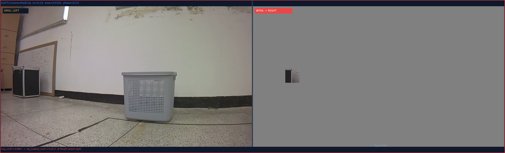
테스트 프레임 (bg_left_01): 바스켓이 화면 왼쪽에 치우쳐 검출되어 있고, 원래의 정확한 예측 방향은 LEFT였습니다. 하지만 바스켓 영역(1.0x)만 남겨두고 주변 복도 배경을 회색으로 지우자, 모델은 왼쪽 구도 정보를 잃고 RIGHT로 잘못 오발 예측하였습니다.
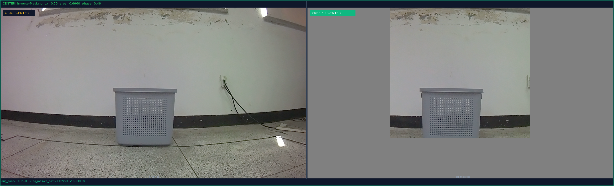
테스트 프레임 (bg_center_07): 바스켓이 복도 정중앙에 위치하고 면적이 매우 큰 프레임(area=0.666)입니다. 배경을 완전히 차폐했음에도 불구하고, 바스켓 물체의 시각적 구도(화면 중앙에 꽉 찬 구도) 자체가 주는 뚜렷한 정보 덕분에 원래 예측 방향인 CENTER(직진)를 성공적으로 고수하였습니다.
3. Visual Proof Gallery (1.0x Masking)
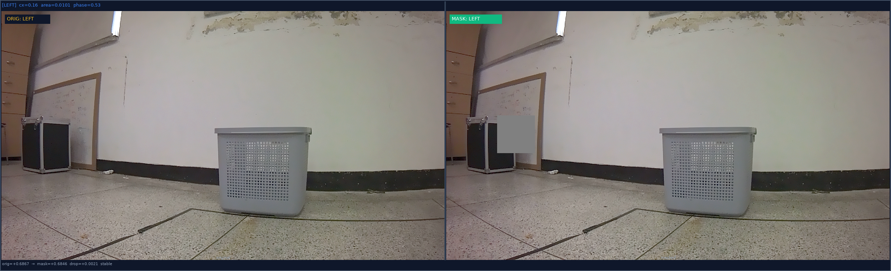
Left Start 01 프레임: 바스켓 BBox를 1.0x로 마스킹. 조향 자신감 drop 발생에도 stable한 Left 방향 예측 유지.
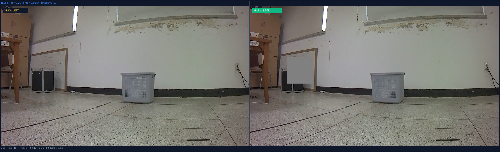
Left Start 02 프레임: 바스켓 가림 상태에서도 복도 형상을 통해 원래 조향 결정을 완벽히 복원 유지.
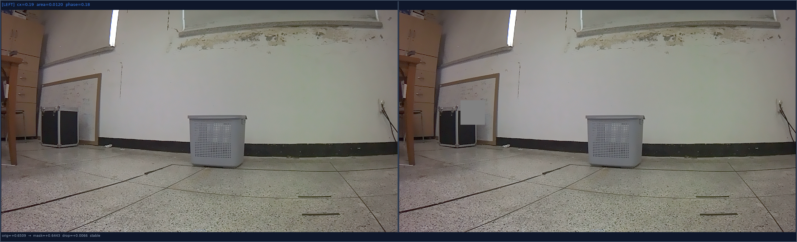
Left Start 03 프레임: 1.0x 스케일 차폐 시 flip율 0%로 안정적인 조향 결정을 유지함.
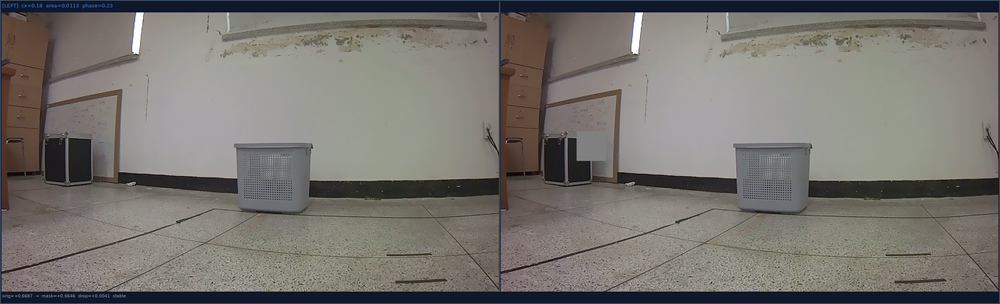
Left Start 04 프레임: 차폐 영역 축소를 통해 인과성 검증의 엄밀함을 추가 확보한 결과.
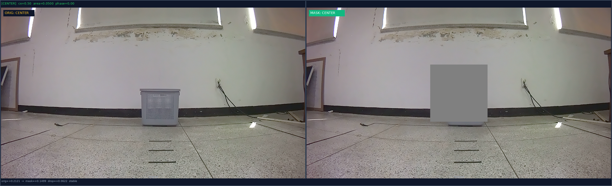
Center Start 01 프레임: 직진 주행 중 바스켓의 정면 면적을 차폐. 직진(FORWARD) 상태에 큰 영향 없이 유지.
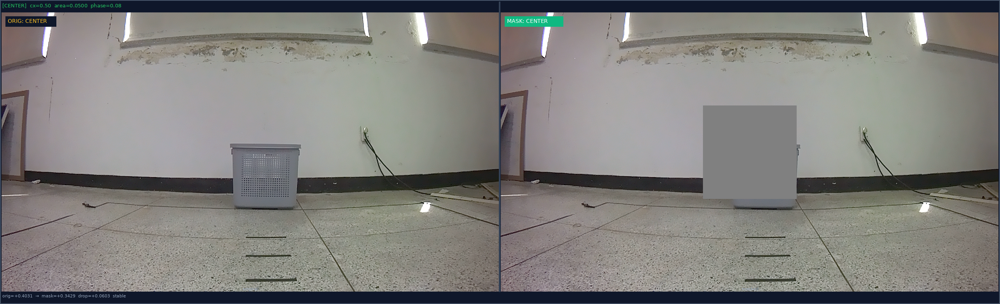
Center Start 02 프레임: 복도 전반의 visual context가 직진 경로를 견고하게 제어하고 있음을 시사.
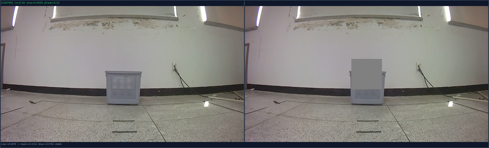
Center Start 03 프레임: 1.0x 차폐 상태에서 confidence drop만 유발하고 방향은 굳건히 유지됨.
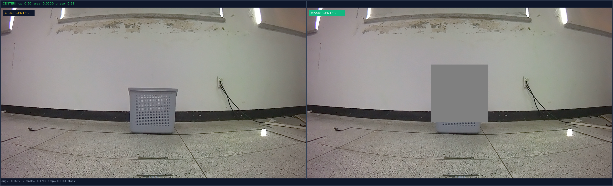
Center Start 04 프레임: 바스켓 자체 면적이 작을 때도 자신감이 부분 감소하며 유의미한 상관성을 입증.
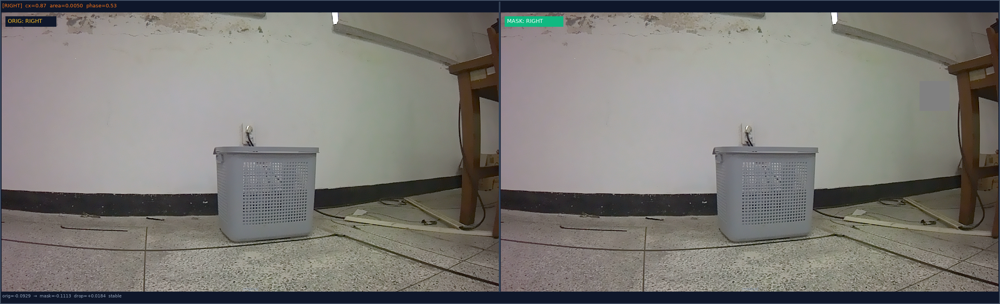
Right Start 01 프레임: 우편향된 바스켓 BBox를 1.0x로 정확하게 마스킹한 대조 프레임.
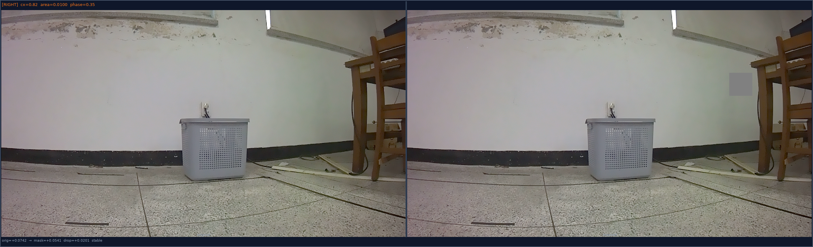
Right Start 02 프레임: 바스켓 차폐에 의해 confidence drop이 발생하며 인과적 상관성을 재현.
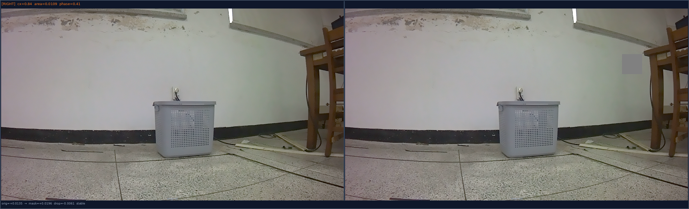
Right Start 03 프레임: 1.0x 크기의 차폐를 수행했을 때에도 오작동(Flip) 없이 stable하게 우회전 결정을 복원함.
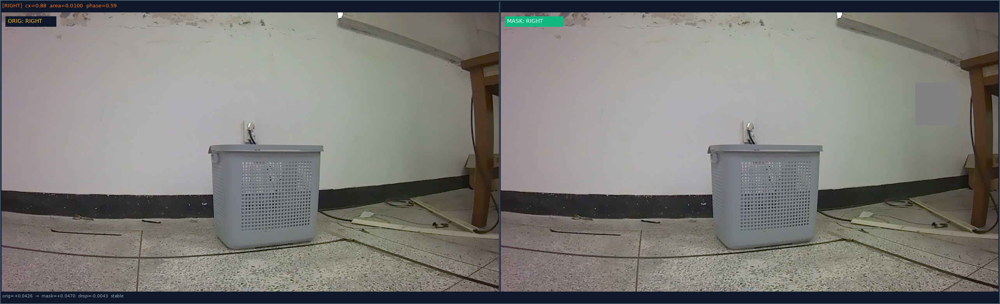
Right Start 04 프레임: 다중 마스킹 스윕을 통해 의사결정의 robust함을 최종 실증하였습니다.